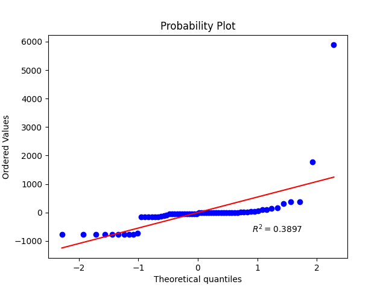
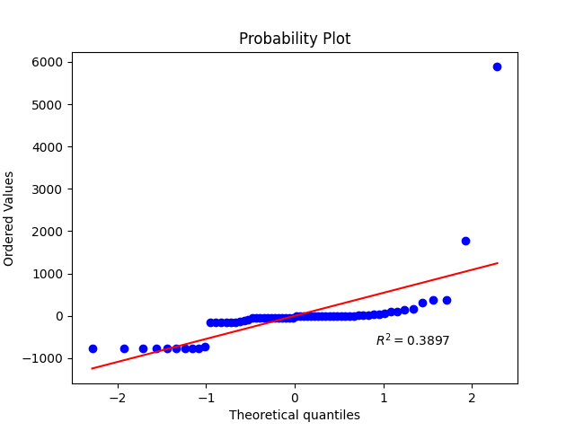

About Me
Hello, I am Robert Barragan, a Computer Science student at Heritage University. I am passionate about programming and am always looking for new opportunities to improve my skills and expand my knowledge. In my free time, I enjoy playing video games, reading books, and learning about new technologies.
One of my Favorite hobbies is to go fishing one of the places I like to go for a good experience is Mardon Resort close to Royal City! I also love to play football when ever I get the chance!
 
